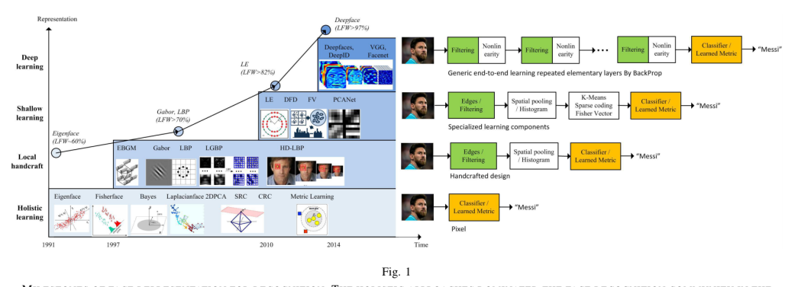
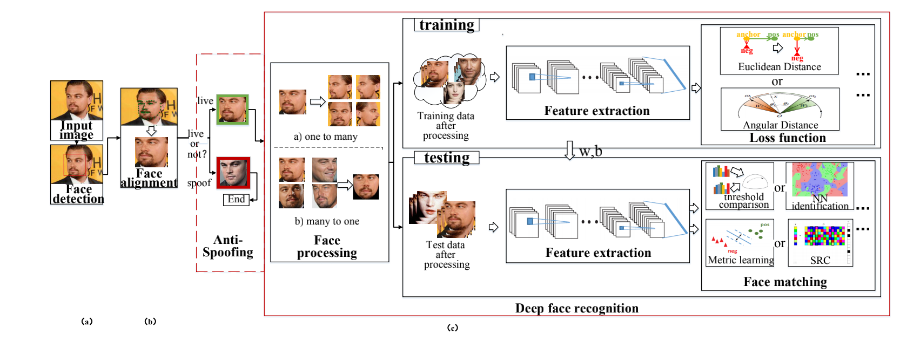
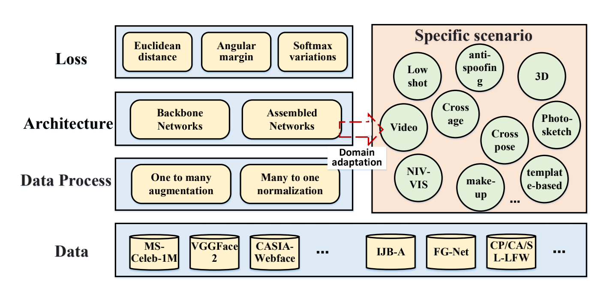
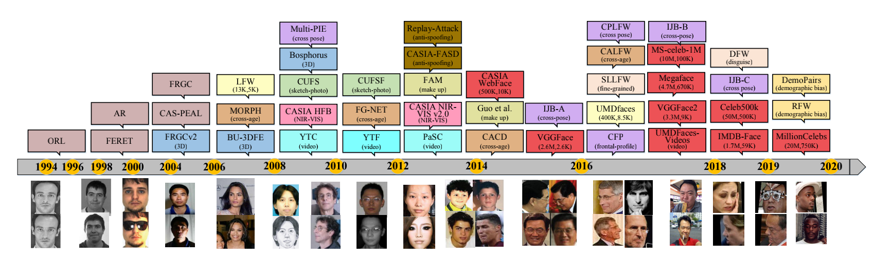
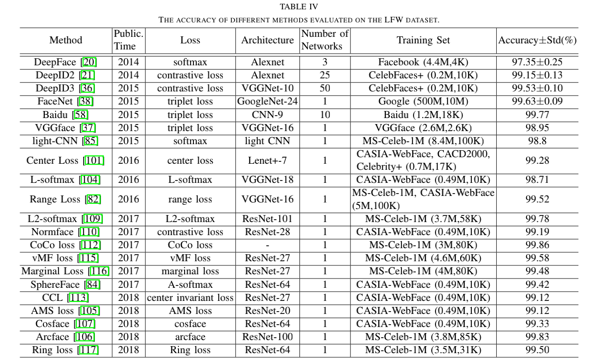
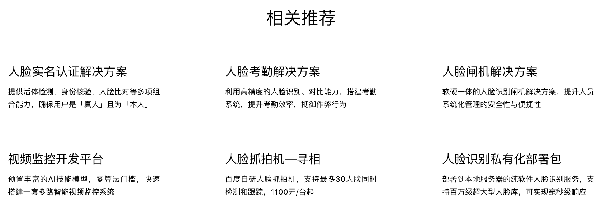
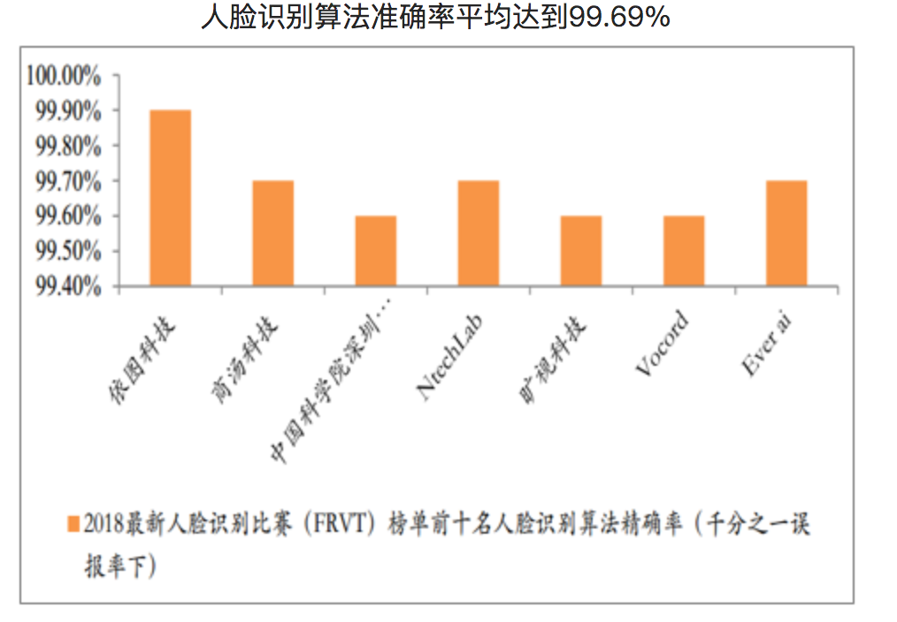
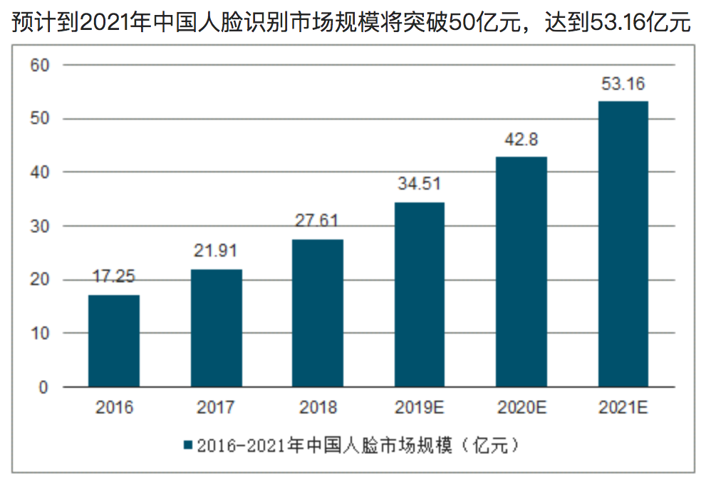

一、至2018年
参考：Masi, Iacopo, et al. "Deep face recognition: A survey." 2018 31st SIBGRAPI conference on graphics, patterns and images (SIBGRAPI). IEEE, 2018.
四个发展阶段：
- Holistie Learning：整合式学习/完整式学习，通过分布的差异，寻找低维特征。
- Gabor与LBP：提取了较高维的纹理特征，提高了鲁棒性，这一阶段主要研究的还是特征算子之类的。
- LE：阴影学习，高维特征降维，结合传统分类器的手段。
- DL：深度学习，构建大规模的卷积神经网络解决问题，达到了超高精度。
二、深度学习方法解决的流程
2.1 图像预处理
每张图片的质量都是不一样的，例如照明、遮挡等因素，都会影响到人脸识别的结果，所以对每张图像，一般都有一个处理的过程。
处理的方法一般有两类：
（1） 一对多增强：从一张图片，生成一系列某个条件不一致的一批图片，用来加强网络学习这个条件的差异。一般这种有3D模型、图像增强等方式来实现。 （2）多对一增强：从一张图片或多个图片进行规范视图，可以理解将图像的质量约束在某一个小的范围内。一般这种可以用GAN、AE等方式来进行图像修复。
实际上工程中的做法，往往采取的方式是，收到一张图像，先进行【人脸检测（Face Detection）】的工作，检测到人脸在这张图像的区域，再将人脸区域的框图抠出来，进行【图像增强（Image Augmentation）】和【图像标准化（Image Normalization）】的工作，送入下一个步骤。
2.2 人脸深度特征提取
采用各种深度卷积网络（CNNs Network）来提取图像的深度特征，深度特征的形式往往是以某一个长度的（如256， 512， 1024）的向量的形式。以黑箱的形式来看，这一步的输入是一张图片（数字矩阵），输出一个向量，向量我们一般叫做深度特征（Deep features），也可以叫做Embeddings。
深度卷积网络的种类比较多，按时间顺序有AlexNet、VGGNet、GooLeNet、ResNet、SENet、DenseNet、EfficientNet等等。这些网络一般都是在广义图像分类任务上取得好的结果，然后来尝试在人脸识别上能否取得好的结果。到2018年的稳定版本的人脸识别往往采用的网络骨架还是ResNet。
2.3 损失函数与特征映射
上述的过程可以提取到人脸的特征，但这个过程并不是一个【规则运算】的过程，即不是你把网络的骨架搭好后，就可以很好的提取到人脸的特征。这个提取到的特征，是需要根据大规模的数据来训练才能得到比较好的特征。
也就是说，训练的目的是让2.2提取的特征更好，那么如何训练，就显得格外的重要。很直观的一种想法，就是我们可以让来自一个人的人脸图像们，提取到的特征，也就是一批特征向量，它们在【空间上的距离相近】，而来自不同人的人脸，提取到的特征也就是向量，在【空间上的距离拉远】，这样的思想叫做【度量学习（Metric Learning）】，采用的手段往往是通过【损失函数（Loss function）】来实现。
流程图可以如下图：
2.4 整体的架构图
对于Data，公开数据的下载【Dataset-Zoo】，数据集的发展时间线：
数据集可以分为训练数据和验证数据两类。
（1）训练数据指的是，给N个人（N往往很大），然后每个人个人脸数据，往往也很大，整体的人脸数量基本在百万级左右。这些数据主要用于网络结构的训练。训练数据往往用的比较多的是MS-1M、VGGFace2，训练数据集量级如下表。
（2）验证数据指的是，给N个人脸数据，然后给一个txt文本信息，有若干行（往往很多），每一行包含三个信息，两个人脸图像的路径，和一个0/1的标识，表示两者是不是一个人的人脸图像，如果是，则标识1，否则标识0。在训练之后网络，我们希望对网络的效果进行验证，会提取里面的每一行，计算两个图像的特征向量，并进行相似度的比对，如果高于阈值，则认为是一个人，否则不是一个人，结合与0/1标识的对比，整体计算的正确率叫做人脸识别的验证率（准确率Accuracy）。验证数据往往用的最多的是LFW，其他的CFP-FP、AgeDB-30、CALFW、CPLFW都会结合一起使用。在LFW验证的各类模型的精度效果（至2018年）如下图所示：
- 相关的模型【Model-Zoo】
模型一般包含两类，一类是与人脸识别相关任务的模型，比如前置的人脸检测、人脸对齐的任务。另一类就是人脸识别本身的模型，包括数据处理、模型结构、损失函数的一套端到端模型。几个很强的人脸识别模型：
（1）LResNet100E-IR,ArcFace@ms1m-refine-v2, BaiduDrive and Dropbox
| Method | LFW(%) | CFP-FP(%) | AgeDB-30(%) | MegaFace(%) |
|---|---|---|---|---|
| Ours | 99.77 | 98.27 | 98.28 | 98.47 |
（2）LResNet50E-IR,ArcFace@ms1m-refine-v1, BaiduDrive and Dropbox
| Method | LFW(%) | CFP-FP(%) | AgeDB-30(%) | MegaFace(%) |
|---|---|---|---|---|
| Ours | 99.80 | 92.74 | 97.76 | 97.64 |
（3）LResNet34E-IR,ArcFace@ms1m-refine-v1, BaiduDrive and Dropbox
| Method | LFW(%) | CFP-FP(%) | AgeDB-30(%) | MegaFace(%) |
|---|---|---|---|---|
| Ours | 99.65 | 92.12 | 97.70 | 96.70 |
（4）MobileFaceNet,ArcFace@ms1m-refine-v1, BaiduDrive and Dropbox
| Method | LFW(%) | CFP-FP(%) | AgeDB-30(%) | MegaFace(%) |
|---|---|---|---|---|
| Ours | 99.50 | 88.94 | 95.91 | ----- |
三、各类问题
人脸识别远远不止人脸识别本身这样的一个问题，它的效果还和各类其他的任务息息相关。 从百度的人脸识别AI开放平台，我们能看到如下的一些场景，理论和工程都是深度学习方法落地的重要挑战。
2018年是各类公司也都在紧密的布局的一年，截至2018年7月，专利公开数量为2163项：
 四、实践
参考Face Recognition库教程走一遍最简人脸识别库的流程。
步骤：
- 先根据不同操作系统，在my_env2上安装face_recognition。
- 做两个空文件夹，一个文件夹里放一些已知人的人脸图像，人名标注在文件名。另一个文件夹放一些希望识别的人脸图像。第一个文件夹路径记为dir1，第二个文件夹路径记为dir2。
- 在终端输入，即可看到第二个文件夹里的所有的图像都会返回识别的名字。
face_recognition dir1 dir2
- （思考）在页面中试图找到，这个项目人脸识别的准确率是多少？